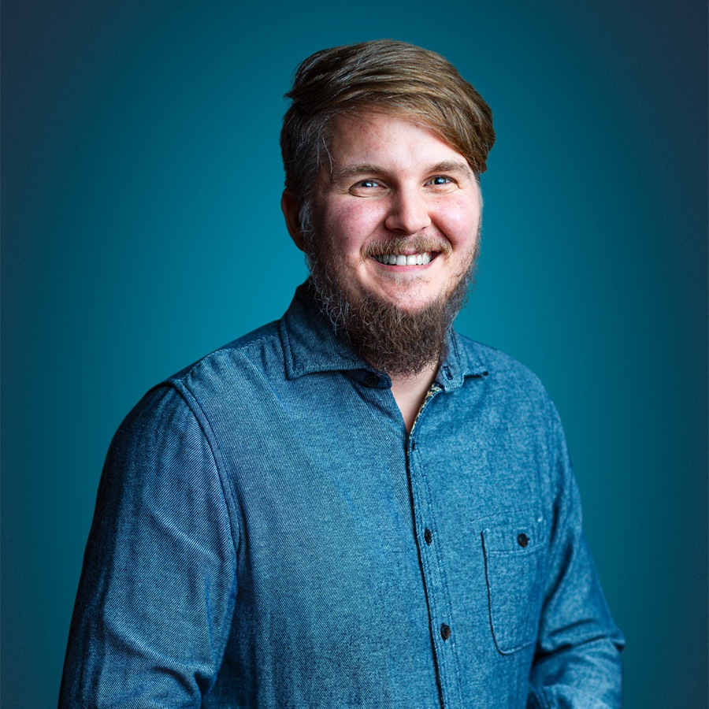
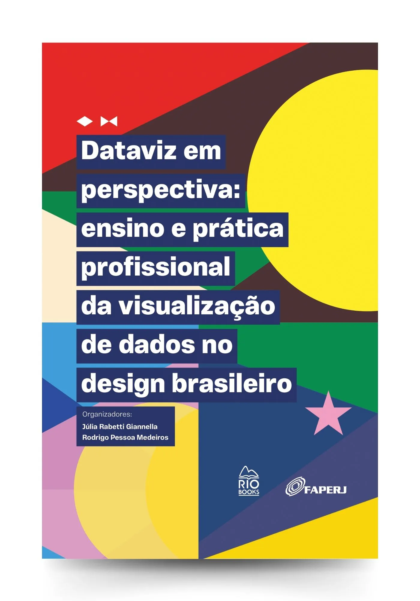

Professor na UFRPE e pós-doutorando no CIn-UFPE. Pesquiso como a visualização de dados e a inteligência artificial ajudam pessoas e organizações a decidir melhor.
Autor de dois livros e fundador do datavizbr, a maior publicação sobre visualização de dados em português.

Obras que exploram a teoria e a prática do design e da computação.

Rodrigo Medeiros & Julia Giannella · Rio Books
Como se ensina e como se pratica visualização de dados no Brasil — um retrato construído a partir de pesquisa com professores e profissionais do design brasileiro.
Conhecer o livroRodrigo Medeiros & Vinicius Garcia
Uma metodologia para guiar equipes na criação e evolução de produtos de IA, nascida e validada em um laboratório vivo dentro da universidade.
Conhecer o livroSou pós-doutorando em Ciência da Computação no CIn-UFPE, sob orientação do professor Silvio Meira. Doutor em Ciência da Computação pela UFPE, Mestre em Tecnologia e Arte Digital pela Universidade do Minho e Especialista em Design da Informação pela UFPE.
Desde outubro de 2024 sou professor da UFRPE, onde pesquiso como a visualização de dados e a inteligência artificial podem ajudar pessoas e organizações. Entre 2013 e 2024, fui professor do IFPB no curso Superior de Tecnologia em Design Gráfico e no Integrado em Multimídia.
Atuo como consultor, coordenador de projetos e líder técnico em projetos de pesquisa e desenvolvimento e de transformação figital para clientes no Brasil, Portugal, Espanha e Estados Unidos. Na comunidade, fui chair do eixo de Visualização de Dados no Congresso Internacional de Design da Informação (CIDI 2025) e do eixo de Tecnologia no CIDI 2021, curador de Design Thinking e UX na The Developers Conference Recife, curador de robótica, design e visualização de dados na Campus Party, e organizei o Interaction South America 2013, em Recife.
CIn-UFPE, desde 2025
UFPE, 2019
Universidade do Minho (PT), 2011
UFPE, 2009
UFRPE — Universidade Federal Rural de Pernambuco
Professor efetivo, atuando no ensino e na pesquisa na intersecção entre design e computação.
datavizbr
Fundador e curador da maior publicação sobre visualização de dados em português, mapeando projetos e profissionais brasileiros.
IFPB — Instituto Federal da Paraíba
Professor do curso Superior de Tecnologia em Design Gráfico e do Integrado em Multimídia.
Curadoria de visualização de dados (desde 2016)
Chair de Visualização de Dados (2025) e de Tecnologia (2021)
Curadoria de robótica, design e visualização de dados (2012–2016)
Organização do ISA 2013, em Recife
Como os dados influenciam o design de produtos digitais.
Um balanço de dez anos de visualização de dados feita por designers brasileiros e suas conexões com as artes, o jornalismo e a ciência de dados.
Com Andrei Gurgel, sobre como pesquisa e prática se alimentam no design.
Com Izabela de Fátima: design centrado no usuário, interfaces tangíveis, arte e o mercado de UX no Brasil.
Episódio 05 do podcast: construir uma carreira em design de interação a partir de Recife.
Palestra sobre resíduos eletroeletrônicos e como o lixo eletrônico impacta as nossas vidas.
Papo sobre o projeto brasileiro No Epicentro, uma visualização de dados sobre as vítimas da Covid-19.
A maior publicação sobre visualização de dados em português — artigos que mapeiam a produção e os profissionais brasileiros.